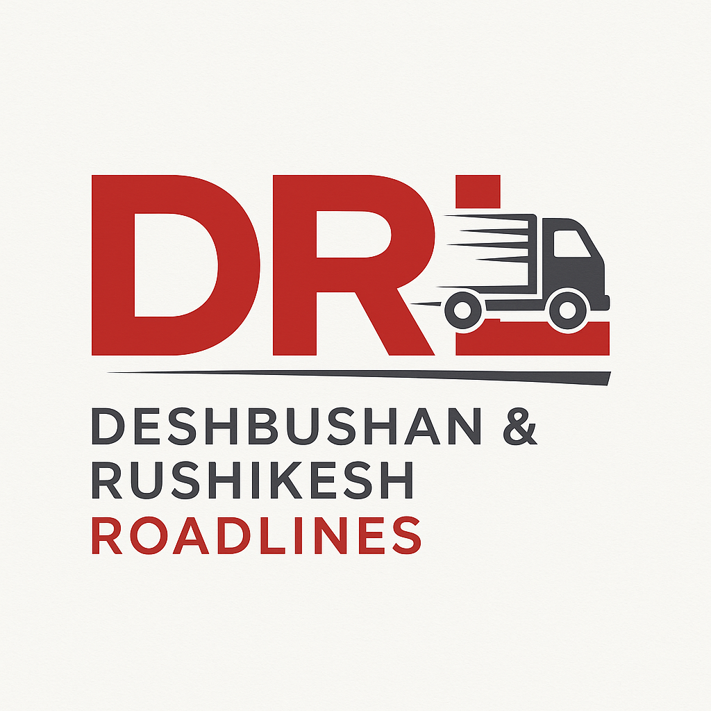
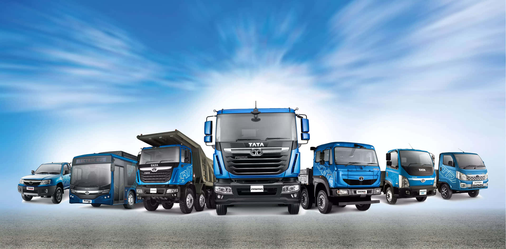

Kolhapur → Sangli
Daily pickups available. Typical transit: 1–2 hours. Recommended for paper rolls, packaged goods and general cargo.
- Capacity: Up to 12 ton
- Typical vehicle: 22 ft / 19 ft body (10–12T)
- Frequency: Daily / On-demand

Deshbhushan & Rushikesh RoadlinesDeshbhushan & Rushikesh Roadlines (DRRL) has proudly served Kolhapur and surrounding industrial regions for more than 10 years. We started as a small family-run transport service moving rice, wheat, fruits, and packaging boxes. We also supported agricultural logistics by transporting sugarcane from farms to factories, giving us strong roots and experience in reliable rural and local transport.
With time, we expanded into industrial goods movement. Today, DRRL is well known for safe and timely transportation of paper rolls and various industrial materials, especially for companies in and around Kagal MIDC. We regularly deliver to nearby commercial hubs including Sangli, Ichalkaranji, Shiroli MIDC and other towns within a 70–80 km radius.
We operate modern and well-maintained trucks with a loading capacity of up to 12 tons, including 22 ft and 19 ft body vehicles. With professional drivers, proper vehicle maintenance, and strong industry connections, we ensure secure and punctual deliveries for all types of loads.
Whether you need local transport for one-time or regular deliveries, DRRL is committed to providing the safest, fastest, and most reliable service. Contact us anytime for a quote or booking.
We operate scheduled and custom local transport services across Kolhapur and neighbouring districts. Below are some popular routes — click any route for more details or contact us to schedule your load.
Daily pickups available. Typical transit: 1–2 hours. Recommended for paper rolls, packaged goods and general cargo.
Perfect for industrial goods, bulk packaged items and regular contracts. We offer weekly scheduled runs and contract rates for frequent shippers.
Regular runs for garment & textile factories. We provide tailored scheduling to sync with factory shifts.
Industrial shuttles for factories in Shiroli MIDC. Special handling available for paper rolls and fragile cargo.
We also serve custom routes across Kolhapur district and nearby areas — drop us a message or call +91 98604 12709 to discuss rates and scheduling. For urgent booking use WhatsApp: Chat on WhatsApp.

Local transport up to 12 tons • Professional drivers • Insured consignments on request
Phone: +91 9860412709
Other: +91 7397849730
Email: deshbhushanc2201@gmail.com
A/P Sangavdewadi, Tal- Karvir, Dist- Kolhapur